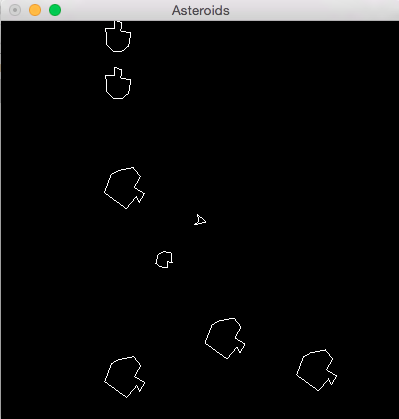

CS 241 Project - Asteroids
Overview
Introduced by Atari in 1979, Asteroids was one of the most successful of the first generation of arcade games and was highly influential on the video game landscape for the next decade. The basic premise of the game is that a ship moves around the screen shooting asteroids while trying not to get hit by them.
This program will be written using the same simplified OpenGL libraries as the other projects of this semester. See this link for information about how to configure your environment for OpenGL development..
Instructions
Your assignment is to create the game of asteroids. Major alterations from the original Atari game include: only one life per game, flying saucers are not required, and scoring is not required (of course, these could be opportunities to go above and beyond...).
A working version of the game is available to you at:
The following shows the game in action:
Game Rules and Specification
- Ship
- The ship obeys the laws of motion. When in motion, the ship will tend to stay in motion.
- Note that the angle or orientation of the ship can be different than the direction it is traveling.
- The right and left arrows rotate the ship 6 degrees to either direction.
- The up arrow will increase the velocity in the direction the ship is pointed by 0.5 pixels/frame.
- For collision detection, you can assume the ship is a circle of radius 10.
- A
drawShipfunction is included in the uiDraw library to assist you. - Bullets
- Pressing space bar will shoot a bullet.
- Bullets are should start with the same velocity of the ship (speed and direction) plus 5 pixels per frame in the direction the ship is pointed. This means if the ship is traveling straight up, but pointed directly to the right, the bullet will have a velocity that is at an angle up and to the right (starting with an upward velocity from the ship, and adding to it a velocity to the right because of the direction the ship is pointed).
- There is no limit to the number of bullets that can be fired.
- Bullets only live for 40 frames, after which they should "die" and be removed from the game.
- A
drawDotfunction is included in the uiDraw library to assist you. - Asteroids
- There are 3 types of asteroids in the game:
- Large Asteroids
- Moves at 1 pixel per frame, with a random initial angle.
- Rotates at 2 degrees per frame.
- For collision detection, can be treated as a circle with radius 16.
- If a large asteroid gets hit, it breaks apart and becomes two medium asteroids and one small one.
- The first medium asteroid has the same velocity as the original large one plus 1 pixel/frame in the up direction.
- The second medium asteroid has the same velocity as the original large one plus 1 pixel/frame in the down direction.
- The small asteroid has the original velocity plus 2 pixels/frame to the right.
- A
drawLargeAsteroidfunction is included in the uiDraw library to assist you. - Medium Asteroid
- Rotates at 5 degrees per frame.
- For collision detection, can be treated as a circle with radius 8.
- If hit, it breaks apart and becomes two small asteroids.
- The small asteroid has the same velocity as the original medium one plus 3 pixel/frame to the right.
- The second, 3 pixels/frame to the left.
- A
drawMediumAsteroidfunction is included in the uiDraw library to assist you. - Small Asteroid
- Rotates at 10 degrees per frame.
- For collision detection, can be treated as a circle with radius 4.
- If a small asteroid is hit, it is destroyed and removed from the game.
- A
drawSmall asteroidfunction is included in the uiDraw library to assist you. - Other game rules
- The game begins with 5 large asteroids.
- All elements (ship, bullets, asteroids) should "wrap" around the edges of the screen. In other words, if an object goes off the right edge of the screen, it should appear on the left edge.
- The dimensions of the window are: (-200, -200) to (200, 200).
Hints and examples
The following examples may be helpful:
- A random function is provided in the uiDraw library that makes it easier to use C++ random numbers. You can call it to get a random number from 2 to 4, as follows:
- Trig functions (sin, cos, tan) will likely be helpful in determining the x and y components of an angle. They can be found in the
cmathlibrary and used as follows. Note that they expect radians rather than degrees. (Also note that the code below is not exactly what you want for this project, but is more in line with what you did for Skeet.)
Getting Started
You will use the same framework and classes that you used for MoonLander and Skeet.
Working as a team with the instructor
In addition, you are also getting a significant amount of code for your game logic. In many sections of this course, this program is written from scratch by two students working together. This is a great opportunity to learn the value of agreeing on the interface (or essentially .h file) of a class, and then being able to go your separate ways and work fairly independently.
In a way, we will also be working in "pairs" this semester coding up different parts of the program, but rather than having students pair up with other students, each of you will pair up with the instructor. In this regard, we need to agree on a common interface for the classes we will use, and the instructor will provide half of the code.
The instructors half of the code will be the Game class. This will include all the logic about collision detection, iterating through lists of items to draw, advance, and remove objects. The game class you are provided should be complete, however you may feel free to make changes to it as you desire (especially in completing feature above and beyond the core requirements).
Do not distribute this code
Finally, please note that other sections of this course, and especially other semesters, are NOT going to receive this game class, but will have to write it themselves. Please help us by NOT sharing this code with anyone else, including friends in future semesters. Your cooperation and integrity in this regard is what allows us to help you on your project.
Getting the code
You can copy over the provided code from: /home/cs241/asteroids/*
This contains the following:
- All of the same libraries we have been working with to this point.
- Fully implemented
game.handgame.cppfiles. - Blank files (both a .h and .cpp) for each of the following:
- velocity
- flyingObject
- ship
- bullet
- rocks
- The rocks.h and rocks.cpp files are intended to hold all three of your asteroid classes (BigRock, MediumRock, SmallRock) plus a common base class (Rock).
- A working makefile.
After copying these files to your working directory, you will likely want to copy over your own Velocity class from previous assignments as a starting point. Also, while it may not completely cover all you need for asteroids, your FlyingObject class from Skeet will likely be a good start for this project as well.
You may add more files as you desire, just remember to update the makefile if you do.
Architectural Design
The entire program will need to be implemented using the principles of encapsulation. Thus, you need to think about the different components (classes) that you will need in the game, and their various actions (methods) and properties (member variables). Before you start programing, you will need to produce UML class diagrams for each of the classes you will be using. Please pay special attention to the design of these components, so they can be as general-purpose as possible.
In addition, for this project you will be expected to use the principles of inheritance and polymorphism. You should identify code that is shared among classes and put it in a common base class.
Finally, to help you work with velocity objects, you should overload some operators (at a minimum, the + operator) for this class.
Assignments
You have three weeks to complete this project, with milestone submissions due at the end of the first and second weeks. Please note that this is a challenging project that will require you to apply several new and challenging topics. If you wait until the last week, you will not have time to complete the project.
This project will be broken up into the following assignment submissions:
- 10 Prove : Design - Asteroids
- 10 Prove : Milestone - Asteroids Part 1
- 11 Prove : Milestone - Asteroids Part 2
- 12 Prove : Milestone - Asteroids Part 3
- 13 Prove : Project - Asteroids
Expectation to Excel
As explained in more detail in the Project link above, the requirements presented here are simply a base standard. To receive up to 100% on this assignment you are expected to show creativity and excel above and beyond what is specifically required.